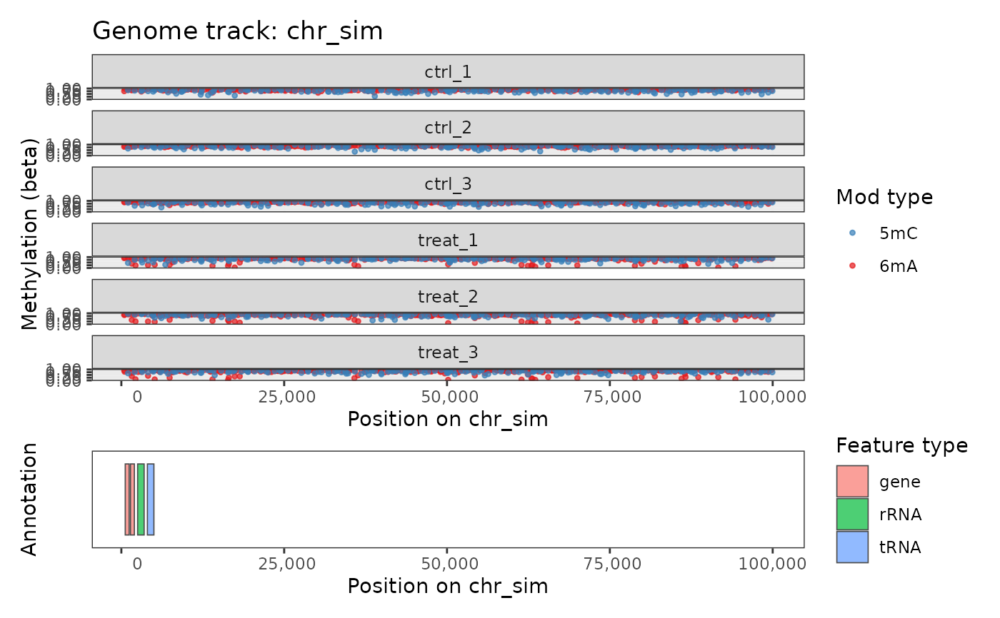
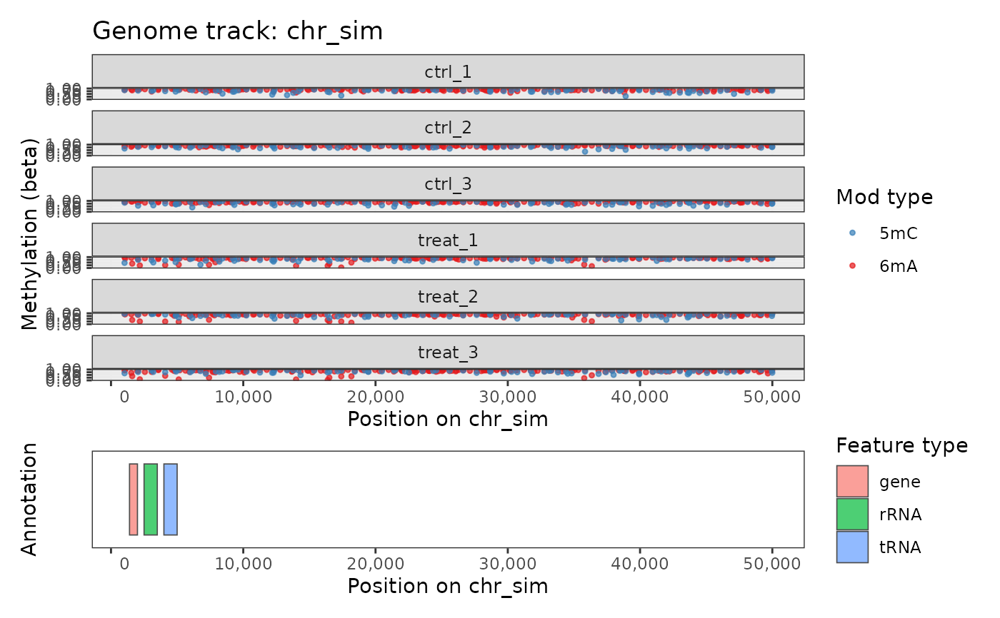
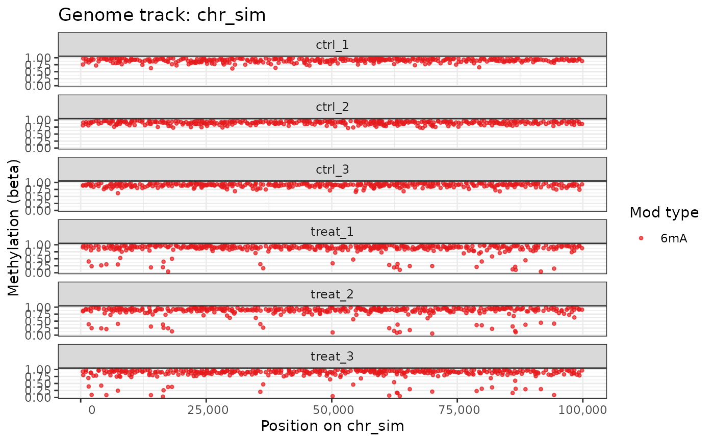

Plots methylation beta values for individual sites along a chromosome region in a genome browser-style layout, with one panel per sample. Optionally overlays genomic feature annotations as colored rectangles in a separate track below the methylation data.
Usage
plot_genome_track(
object,
chromosome,
start = NULL,
end = NULL,
mod_type = NULL,
motif = NULL,
mod_context = NULL,
annotation = NULL
)Arguments
- object
A
commaDataobject.- chromosome
Character string. The chromosome (sequence name) to plot. Must be present in
names(genome(object)).- start
Integer or
NULL. Start position of the region to display (1-based, inclusive). IfNULL, the plot begins at position 1.- end
Integer or
NULL. End position of the region to display (1-based, inclusive). IfNULL, the plot extends to the end of the chromosome.- mod_type
Character string specifying a single modification type to display (e.g.,
"6mA","5mC"). IfNULL(default), all modification types are shown, colored differently.- motif
Character vector or
NULL. If provided, only sites with matching sequence context motif(s) are displayed (e.g.,"GATC"). IfNULL(default), all motifs are included.- mod_context
Character vector or
NULL. If provided, only sites whosemod_contextrowData column matches one of the supplied values are included. IfNULL(default), all modification contexts are included.- annotation
A
GRangesobject of genomic features to display in the annotation track,NULL(default, usesannotation(object)if available), orFALSEto suppress the annotation track entirely.
Value
A ggplot object. The methylation track shows
individual sites as points (x = genomic position, y = beta value 0–1)
colored by modification type, faceted by sample. If annotation features
are present on the selected chromosome (and annotation is not
FALSE), they are displayed as colored rectangles in a separate
annotation panel below.
Examples
data(comma_example_data)
plot_genome_track(comma_example_data, chromosome = "chr_sim")

# Restrict to a region
plot_genome_track(comma_example_data, chromosome = "chr_sim",
start = 1000, end = 50000)

# One modification type, no annotation
plot_genome_track(comma_example_data, chromosome = "chr_sim",
mod_type = "6mA", annotation = FALSE)
